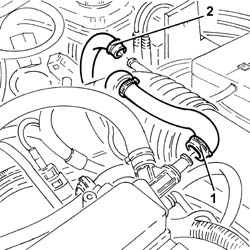
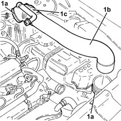
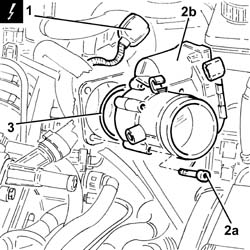
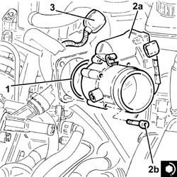

1056F17 THROTTLE CASING with D.V.L. - R.R .
- Path
- Procedures > 10 ENGINE > 1056 PETROL INJECTION SYSTEM > 1056F DIRECT PETROL INJECTION SYSTEM > 1056F17 THROTTLE CASING with D.V.L. - R.R .
- Kind
- repair procedure (removal / refitting; the operation number is the code)
- Applies to
- engines: 2.0 JTS, 2.0 JTS; all production periods
- Interactive page
- https://sloeber94.github.io/elrnDB-a156/en/#/3237731
Applies to: engines: 2.0 JTS, 2.0 JTS; all production periods
 Removing
Removing
 Refitting
RefittingEnsure that the ignition key is in OFF position, then disconnect the negative battery terminal (-).
 | Name | Connector |
|---|---|---|
- | Battery |
Proceed with removal 1016A40 ignition coil cover on cylinder head- r+r .
1. Loosen the band and disconnect the oil vapour recirculation pipe from the cam cover.
2. Loosen the band and disconnect the vacuum pipe from the corrugated sleeve.

Applies to: engines: 2.0 JTS, 2.0 JTS; all production periods
1. Loosen bands (1a) and remove the rigid pipe (1b) with corrugated air intake sleeve (1c) from the air filter to the throttle body.

Applies to: engines: 2.0 JTS, 2.0 JTS; all production periods
1. Disconnect the electrical connection from the throttle body with D.V.L. and release the wiring from the band.
| Name | Connector |
|---|---|---|
1 | Throttle body actuator |
2. Undo bolts (2a) and remove throttle body with D.V.L. (2b).
3. Remove the O-ring.

Applies to: engines: 2.0 JTS, 2.0 JTS; all production periods
Refitting
Removing.
1. Refit the O-Ring in its seating.
2. Place the throttle body with D.V.L. (2a) back in its housing and secure it tightening the bolts (2b) to the recommended torque.
 | Fastening | Component | Ø | Value (daNm) |
|---|---|---|---|---|
2b | Bolt | BUTTERFLY CASING | M6 | (Modular intake manifold side) 0.8 ÷ 1.0 |
3. Connect the electrical connection to the throttle body with D.V.L. and secure the electrical wiring to the band.

Applies to: engines: 2.0 JTS, 2.0 JTS; all production periods
Place the rigid air supply pipe with corrugated air intake sleeve from the filter to the throttle body back in its housing and secure it using the bands.
Connect the vacuum pipe to the corrugated hose and tighten the band.
Connect the oil vapour recirculation pipe to the tappet cover and secure with a band.
Proceed with refitting 1016A40 ignition coil cover on cylinder head- r+r .
Connect the negative (-) battery terminal.